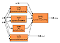
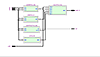

ForSyDe
Formal System Design
Quick links
Overview
The ForSyDe (Formal System Design) methodology has been developed
with the objective to move system design (i.e. System on Chip,
Hardware and Software systems) to a higher level of abstraction and to
bridge the abstraction gap by transformational design refinement.
ForSyDe is based on carefully selected formal foundations.
First, the designer must supply a initial specification model,
which
- Can mix different Models of Computation (MoCs)
i.e. Synchronous MoC,
Untimed MoC ...
- Is modelled by a network of processes interconnected by signals. Each process is
created by a process constructor, allowing to separate communication and computation.
Then, the abstract specification model is refined by different design transformations into
a detailed implementation model, which is finally translated into a
target implementation language.
ForSyDe research currently pursues two main goals:
- System modeling with heterogeneous models of computation.
We have developed libraries for different computational models
allowing the simulation of heterogeneous systems using Haskell. The
libraries stretch from continuous time to synchronous time
models. Using ForSyDe's shallow-embedded DSL (Domain Specific Language) we are able to simulate electronic systems with analog and digital parts.
- Development of a transformational design refinement
methodology. We have outlined a methodology for transformational
design refinement. The system, initially described as an abstract
specification model, is
refined into a more detailed implementation through semantic
preserving and non-semantic preserving design
transformations. Then, the resulting implementation model is
translated into a target language.
So far, we have centered our efforts around the synchronous
computational model. As part of this work, we have created a
deep-embedded DSL with which is possible to generate GraphML diagrams and
synthesizable
VHDL out of syncrhonous system descriptions. In addition, it is
possible to simulate systems descriptions mixing the deep-embedded and
shallow-embedded APIs.
ForSyDe People
Ingo Sander, Axel Jantsch, Zhonghai Lu, Tarvo Raudvere, Jun Zhu, Alfonso Acosta
ForSyDe Implementation
ForSyDe is implemented as a EDSL (Embedded Domain Specific
Language) on top of the Haskell
programming language.
Its implementation relies on many Haskell-extensions, some of which are
exclusive to GHC (Template Haskell, for
instance).
ForSyDe has been tested to run successfully on Linux, OSX-Leopard-x86 and
Windows when compiled under GHC version 6.8.2. Due to the massive number of instances
automatically generated in ForSyDe, it is not recommended to use a
higher version of GHC until bug #2328 is
fixed.
Current Features
Two different sets of features are offered depending on the
signal API used to design the system:
- Deep-embedded (ForSyDe.Signal)
Deep-embedded signals, based on the same concepts as Lava, are aware of
the system structure. Based on that structural information ForSyDe's embedded
compiler, can perform different analysis and transformations.
- Embedded compiler backends:
- Synchronous model of computation.
- Support for components.
- Support for fixed-sized vectors.
- Shallow-embedded (ForSyDe.Shallow.Signal)
Shallow-embedded signals are modelled as streams of data
isomorphic to lists. Systems built with them are unfortunately
restricted to simulation, however, shallow-embedded signals
provide a rapid-prototyping framework with which to experiment
with Models of Computation (MoCs).
- Synchronous MoC.
- Untimed MoC.
- Continuous Time MoC.
- Domain Interfaces allow connecting various subsystems with different timing
(domains) regardless of their MoC.
Downloads
-
ForSyDe package (Version 3.0, September 2008)
-
ForSyDe Standard Library (Version 2.3, April 2003)
This version is an updated version of 2.0 but it only
covers the synchronous library and domain interfaces.
-
ForSyDe Standard Library (Version 2.0,
November 2001)
Darcs repository
darcs get --partial http://www.ict.kth.se/org/ict/ecs/sam/projects/forsyde/www/darcs/ForSyDe/
Documentation
ForSyDe Presentation
Reading this presentation is a good way to get a quick grasp of ForSyDe
and some details about its current implementation.
ForSyDe Tutorial
Hacking Guide
To be released soon
Publications on ForSyDe
Here is a list of selected publications on ForSyDe. You can also
access the full list of ForSyDe
publications.
- Sander's PhD thesis is the most detailed reference on the ideas behind the ForSyDe design methodology. It discusses the modeling approach using the synchronous model of computation, design transformations and the translation of implementation models to VHDL.
[
San03]
Ingo Sander.
System Modeling and Design Refinement in ForSyDe.
PhD thesis, Royal Institute of Technology, Stockholm, Sweden, April
2003.
[
bib |
.pdf ]
- This article is based on Sander's PhD thesis (see above) and focuses
on modeling and transformation inside the ForSyDe methodology.
[
SJ04]
Ingo Sander and Axel Jantsch.
System modeling and transformational design refinement in ForSyDe.
IEEE Transactions on Computer-Aided Design of Integrated
Circuits and Systems, 23(1):17-32, January 2004.
[
bib |
.pdf ]
- This book chapter is a good introduction to the concept of
Model of Computation (Moc), it describes some specific MoCs (Untimed,
Synchronous and Discrete Timed) and discusses how can they interact
with each other.
[
Jan05]
Axel Jantsch.
Models of embedded computation.
In Richard Zurawski, editor,
Embedded Systems Handbook. CRC
Press, 2005.
Invited contribution.
[
bib |
.pdf ]
- This paper discusses different models of computation and
languages used for the design of heterogeneous embedded systems. The
paper is not based on ForSyDe, but provides a more general
discussion about the strength and weaknesses of different models of
computations.
[
JS05a]
Axel Jantsch and Ingo Sander.
Models of computation and languages for embedded system design.
IEE Proceedings on Computers and Digital Techniques,
152(2):114-129, March 2005.
Special issue on Embedded Microelectronic Systems; Invited paper.
[
bib |
.pdf ]
- This book discusses models of computation in general, but it
also introduces the formal representation of several computational
models used in the ForSyDe methodolgy.
[
Jan03]
Axel Jantsch.
Modeling Embedded Systems and SoCs - Concurrency and Time in
Models of Computation.
Systems on Silicon. Morgan Kaufmann Publishers, June 2003.
[
bib |
http ]
- This early paper gives the ideas for the synthesis of a
synchronous ForSyDe model to the hardware description language VHDL.
[
SJ99b]
Ingo Sander and Axel Jantsch.
System synthesis based on a formal computational model and skeletons.
In
Proceedings IEEE Workshop on VLSI'99, pages 32-39,
Orlando, Florida, USA, April 1999. IEEE Computer Society.
[
bib |
.pdf ]
Examples
These, and some other examples, are included in ForSyDe's distribution.
| Name |
Description |
Code |
GraphML code |
GraphML diagram (first hierarchy level) |
VHDL code |
RTL diagram (first hierarchy level) |
| ALU |
Naive 4-bit arithmetic logic unit created with ForSyDe's
deep-embedded API |
ALU.hs |
Browse or Download |
 |
Browse or Download |
 |
| Equalizer |
Digital Equalizer created with ForSyDe's shallow-embedded API |
Browse or Download |
NA |
NA |
NA |
NA |
If you have any comments, suggestions or patches please subscribe
to our development mailing list or contact a member of
the ForSyDe team directly.
If you have found a code or documentation bug, please check our issue
tracker for duplicates before reporting it and feel free to create a new issue
yourself.
Patches are always welcome, you can get the latest development verion of
ForSyDe from our
darcs repository.
If you plan to modify ForSyDe's code, it is recommended to read the Hacking Guide first.

{kind=link}
{kind=link}